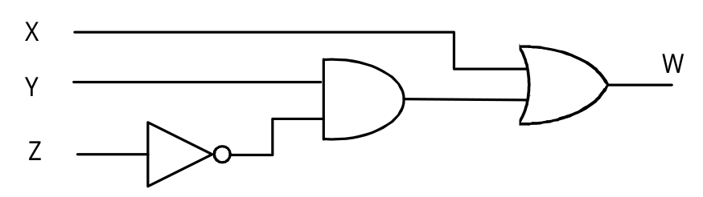

São dispositivos que operam um ou mais sinais lógicos de entrada para produzir uma e somente uma saída.

Geralmente utilizadas...
São geralmente utilizadas em circuitos eletrônicos por causa das situações que esses sinais podem apresentar,
como:
Presença de sinal: 1
Ausência de sinal: 2
Surgimento
O matemático George Boole, através da obra intitulada An Investigation of The Laws of Thought, apresentou o sistema matemático conhecido como álgebra de Boole.
Até então tudo era feito de forma analógica. Na eletrônica era conhecido como sistemas lineares.
Então alguns anos mais tarde...
O engenheiro eletrônico Claude Shannon utilizou das teorias da álgebra de Boole para a solução de problemas de circuitos de telefonia com relê.
ELETRÔNICA DIGITALPORTAS LÓGICAS TECNOLOGIAS
Afinal, para que serve?
é isso isso e isso
Tá, mas alguém usa? Quem?
é isso isso e isso
Algumas aplicações...
é isso isso e isso
Mapa de Karnaugh
O que é?
é isso isso e isso
Quem criou?
é isso isso e isso
Afinal, para que serve?
é isso isso e isso
Tá, mas alguém usa? Quem?
é isso isso e isso
Algumas aplicações...
é isso isso e isso
Python
Foi escolhido Python como linguagem de desenvolvimento devido a todo suporte oferecido por ela nos trabalhos feitos dentro de Machine Learning.
Tensorflow + Keras
Utilizamos essas libraries por todo suporte oferecido na estruturação de redes neurais, bem como a possibilidade de acompanhamento de todo o processo em um trainamento por meios de log's.
scikit-image
Essa library é de grande valia para ser utilizada em conjunto com técnicas de processamento de imagem na linguagem Python.